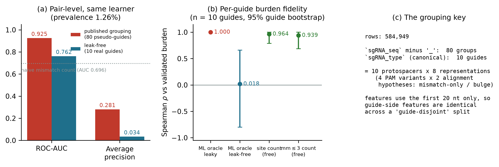
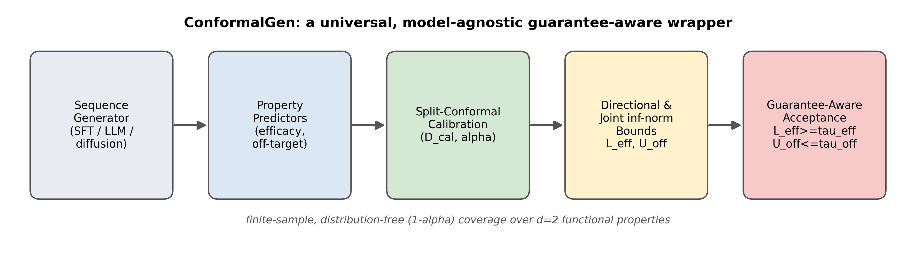
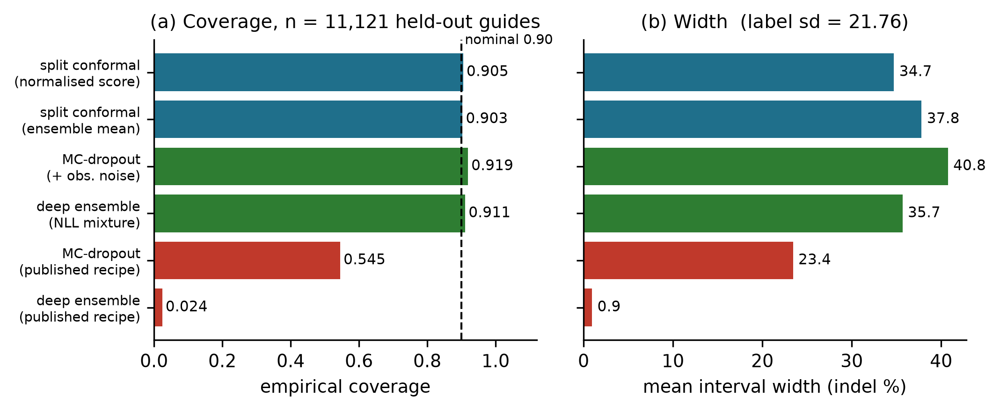
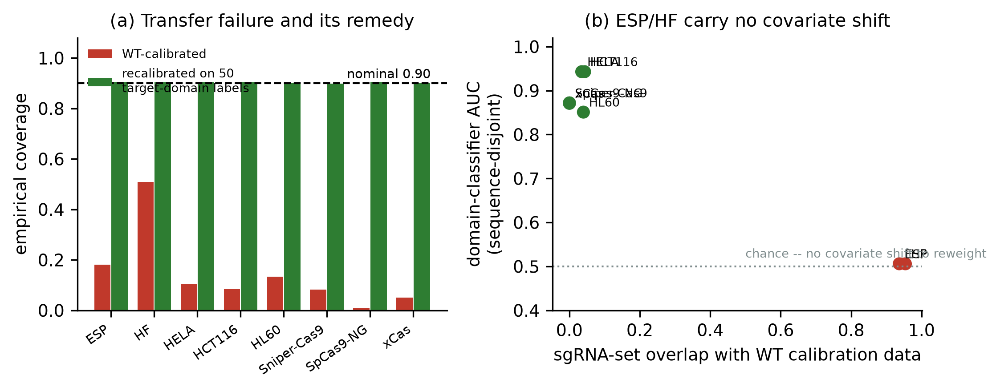
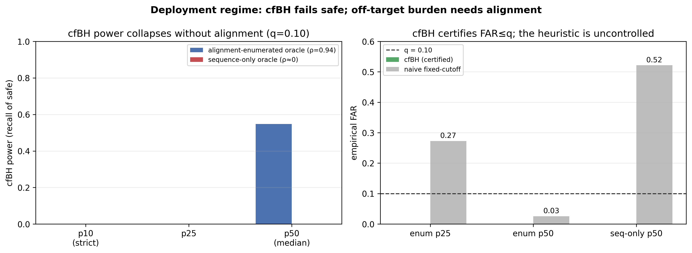
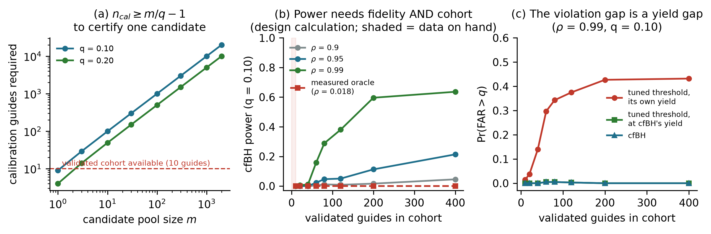

A model-agnostic conformal decision framework, evaluated against experimentally measured off-target cleavage — and an audit of what it can actually deliver there. The guarantees hold; the validated cohorts are two orders of magnitude smaller than certifying anything requires.
Correction (14 October 2026). This page previously headlined an off-target oracle ROC-AUC of 0.925 and cfBH power of 0.58–0.80. Those figures came from cross-validation grouped on a column that encodes each of the benchmark's ten guides eight times. Corrected, they are 0.762 and 0.000. Full account: CORRECTION.md.

Same learner, same features, same hyperparameters; only the grouping key differs. The published key places eight representations of one guide on both sides of a nominally guide-disjoint split.
Any predictor is wrapped for finite-sample, distribution-free coverage under exchangeability:
A multi-objective $\infty$-norm score covers both objectives with one quantile (no union bound).
Scalar target $T(y)=\min\{(y_{\mathrm{eff}}-\tau_{\mathrm{eff}})/s_{\mathrm{eff}},\,(\log(1{+}\tau_{\mathrm{off}})-\log(1{+}y_{\mathrm{off}}))/s_{\mathrm{off}}\}$, monotone score $V(x,t)=t-\hat T(x)$, full-calibration p-values + Benjamini–Hochberg:
Controls the False Acceptance Rate (an FDR-type criterion) at $\mathrm{FAR}\le q$ in finite samples.


Indel-efficacy is intrinsically hard: even at 55k the efficacy oracle tops out at Spearman ≤ 0.78, below the ≳ 0.9 fidelity cfBH needs. Efficacy-only and joint selection power are ≈ 0 — a property of the assay, not of conformal prediction. More data does not help.

A wild-type-calibrated predictor covers at 0.01–0.51 across engineered nucleases and cell lines, at nominal 0.90. Recalibrating on 50 target-domain labels restores 0.899–0.906 in every panel — that, not covariate-shift reweighting, is the remedy the data support: eSpCas9 and SpCas9-HF1 share 93.7% and 95.4% of their guides with the calibration set, so there is no shift to reweight. No cohort carries both validated efficacy and validated off-target, so the multi-objective guarantee is validated per objective, never jointly.

Off-target burden is an alignment statistic: the free count of enumerated near-match sites tracks validated per-guide burden at ρ = 0.964 [0.79, 1.00], where the trained 181-feature oracle reaches ρ = 0.018 once the guide is unseen. From the 20-nt sequence alone ρ ≈ 0. In every regime cfBH fails safe — it selects nothing rather than falsely accepting — which at these cohort sizes is all it does.

Corrected: the tuned threshold's violation gap is a yield gap. At its own operating point it accepts about twice as much and violates FAR ≤ q on 37–47% of splits; constrained to accept exactly what cfBH accepted, its FAR is 0.001 — identical to cfBH's — and its violation rate falls to 0.01. The certificate picks a conservative operating point automatically; it does not make a given accepted set safer.
git clone https://github.com/malekpouri/conformal-genomics.git cd conformal-genomics pip install -r requirements.txt ./reproduce.sh # pipeline + remediation + 38 tests
from src.selection import ConformalSelector sel = ConformalSelector(tau_eff=45., tau_off=20.)\ .fit(train_seq, train_eff, train_off) sel.calibrate(cal_seq, cal_eff, cal_off) # FAR <= q, plus power / precision / yield print(sel.evaluate(test_seq, test_eff, test_off, q=0.10))